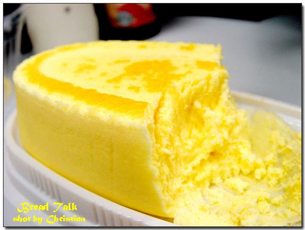

Bread Talk @ Mar 05, 2007
在金鹰发现一家名为“Bread Talk”的面包店，在那里遇到目前为止我看过的最大的芝士蛋糕，售价才￥28.00。云中餐厅和星巴克的芝士蛋糕体积只有它的1/4，价格却有它的54%之多。对偏爱芝士口感的我来讲真是好开心找到既好吃又实惠的芝士蛋糕呢：）经受不住面包店里的柔香，买了一只刚出炉的“古道热肠”，外面酥软有嚼劲，里面是只烟熏的烤肠，名字够乡土，口味够欧风，乘热吃真是莫大的味蕾享受~

在金鹰发现一家名为“Bread Talk”的面包店，在那里遇到目前为止我看过的最大的芝士蛋糕，售价才￥28.00。云中餐厅和星巴克的芝士蛋糕体积只有它的1/4，价格却有它的54%之多。对偏爱芝士口感的我来讲真是好开心找到既好吃又实惠的芝士蛋糕呢：）经受不住面包店里的柔香，买了一只刚出炉的“古道热肠”，外面酥软有嚼劲，里面是只烟熏的烤肠，名字够乡土，口味够欧风，乘热吃真是莫大的味蕾享受~

8 Responses to “Bread Talk”
2007-03-05
深圳也有一间Bread Talk(面包新语)，生意非常好，芝士蛋糕的价格也是一样
2007-03-05
恩，是新加坡的．以前一位同事还想加盟，不过他们的加盟费倒是对于面包店来说不低．但是他们的销量很好．一天在上海美罗城销售曾经高过２Ｗ元，不简单哦，面包店耶
2007-03-05
好像印象里面中央下面也有一家的，上海就更多，比较喜欢他们家的松松和抹茶蛋糕
2007-03-05
深圳不止一间Bread Talk。
2007-03-06
春节回南京特意去云中试了它的Cheese cake, 觉得还是比较正宗的，比较厚实，是欧式的做法；不太喜欢Bread talk，是一般的台式做法；
上海花园饭店的Cheese Cake是绝顶的好啊~
明天正约着去试北京凯宾斯基的cheese cake，憧憬中~~
呵呵，一说起cheese cake啊~
Ps: 一直看你的Blog哦，很美丽很细致很丰富的女人：）
2007-03-06
楼上的是喜欢吃芝士蛋糕还是做西餐的师傅？对芝士蛋糕怎会如此执著地追随？我喜欢吃芝士蛋糕，喜欢奶酪食品：）
2007-03-06
呵呵，我倒是想去学做西点呢~ 烘烘烤烤的，全程伴随牛奶的醇香~
我不太受得了单纯的Cheese，特别是Goat cheese,实在臭得可以；但是cheese cake，真是一见倾心~
2007-03-06
佳能 EOS 30D
增加了更多的自动功能,便于操作
单反数码相机,820万象素;max:850万
传感器尺寸：22.5×15.0mm夜晶屏幕:2.5
2006年02月生产发布,1.6倍等效焦距...
9点TTL自动对焦，可更换镜头价格提高了2500多,电池太重,再加一镜头性价比不高,除非对于摄影爱好者.
风吹过
Leave A Reply
存档只读，评论已关闭。